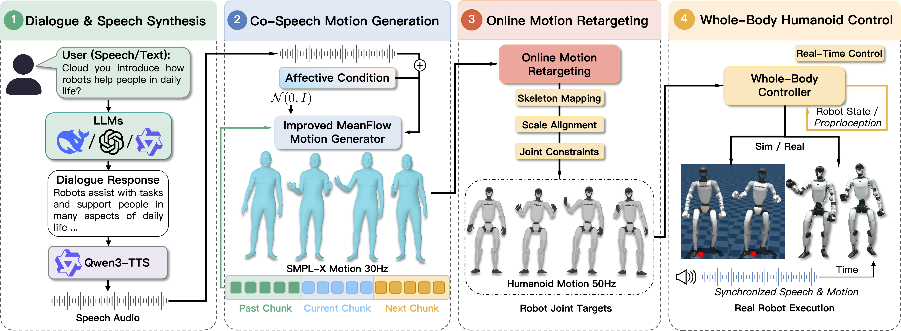
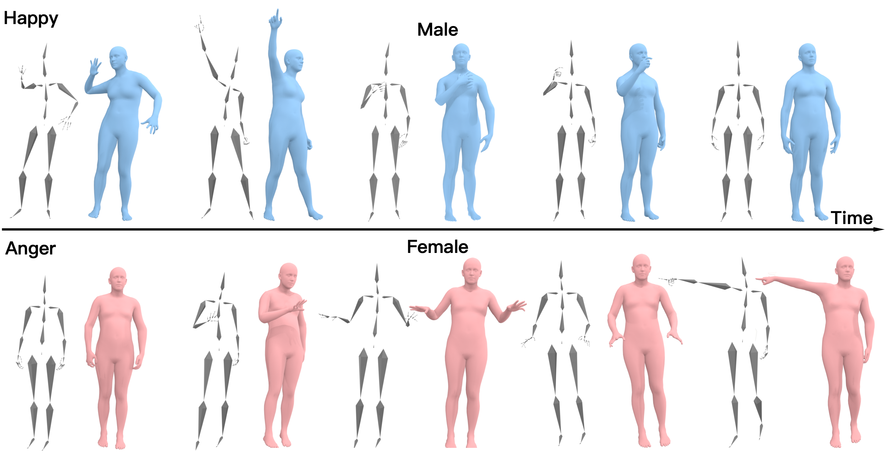
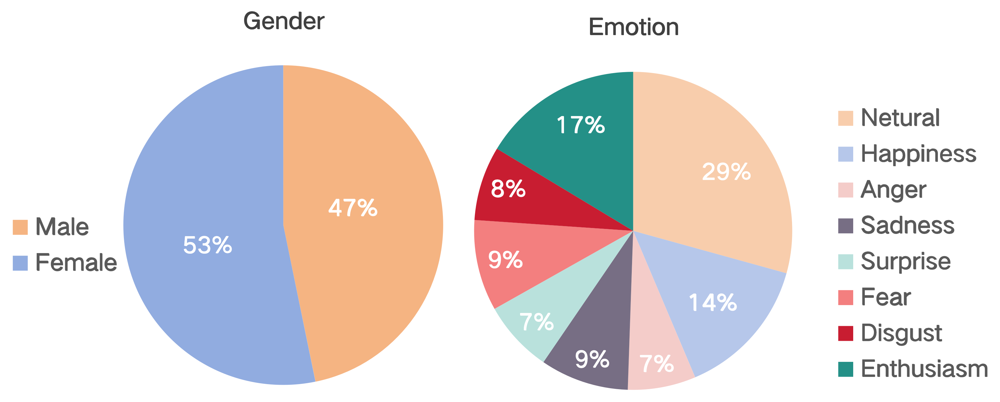
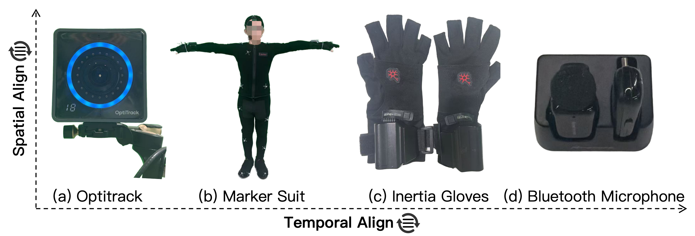
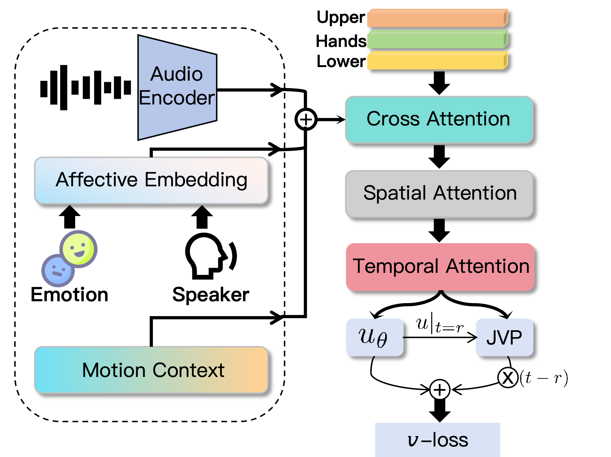
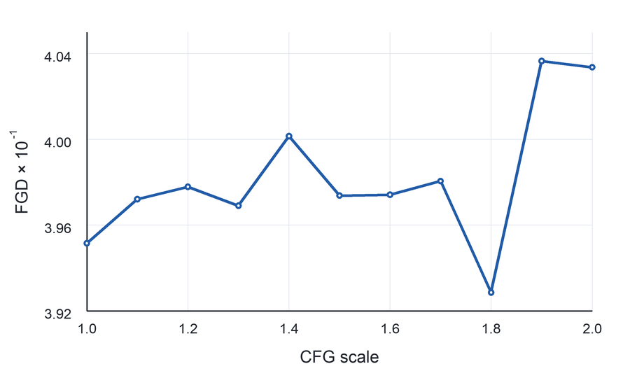
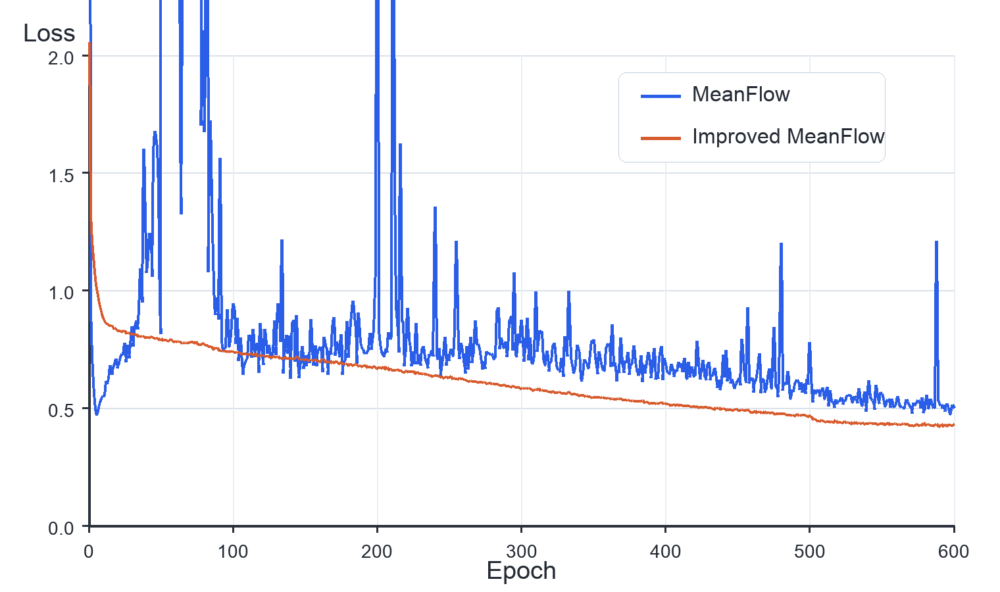

Real-time affective co-speech motion for humanoid robots
SocialHumanoid
A Real-Time Speech-Driven System for Affective Humanoid Motion
Given streaming speech and an affective condition, SocialHumanoid synthesizes emotionally expressive full-body motion, retargets it online, and executes it on a physical humanoid robot.
Overview
Speech-aligned motion with visible affect and robot-ready execution.
Humanoid co-speech motion must do more than look plausible on a virtual skeleton. It needs to stay synchronized with speech, remain executable under robot constraints, and preserve distinguishable emotional styles after retargeting and control.
System Pipeline
From dialogue and speech to controllable full-body robot motion.
The runtime system connects response generation, speech synthesis, affect-conditioned motion generation, online retargeting, and whole-body control.

Robot Demos
Continuous speech-driven motion in real-world robot scenes.
Demonstrations cover multilingual speech, interactive dialogue, interaction-specific actions, emotion-conditioned motion, and long-horizon execution.
Extended Streaming
Over 10 minutes of continuous speech-driven generation, shown as a silent 5x speed-up.
The long-horizon run includes the fixed action inserts described in the paper, mixed into the continuous speech-driven motion stream while online retargeting and control keep the physical robot execution stable.
AffectMoCap Dataset
Professional actor motion capture for affective body expression.
AffectMoCap contains synchronized speech, full-body SMPL-X motion, transcripts, speaker metadata, and emotion annotations across eight affective labels.
What it captures
- Two professional actors, one male and one female.
- Eight affective labels: neutral, happiness, anger, sadness, surprise, fear, disgust, and enthusiasm.
- Full-body marker motion, hand motion-capture gloves, and synchronized 48 kHz speech audio.
- Processed 16 kHz audio and 333D SMPL-X motion frames compatible with BEAT2-style training.



Method
A co-speech generator wrapped in deployment-aware robot execution.
Part-wise latent motion
Upper body, hands, lower body, and translation are encoded with residual vector quantized autoencoders, preserving detail while keeping online inference compact.
Affect-conditioned generation
Low-latency acoustic features are fused with emotion and speaker embeddings, then denoised by cross-attention and spatial-temporal Transformer blocks.
Improved MeanFlow
One-step interval-velocity sampling synthesizes each motion window fast enough for interactive speech-driven deployment.
Retargeting and control
Generated SMPL-X motion is converted to humanoid references with online retargeting, smoothed, queued, and tracked by a whole-body controller.

Results
Better motion realism with competitive synchrony and fast inference.
SocialHumanoid is evaluated on BEAT2, AffectMoCap, perceptual studies, ablations, and physical humanoid deployment.
BEAT2 Quantitative Evaluation
| Method | FGD (down) | BC (up) | Diversity (up) | NFE (down) |
|---|---|---|---|---|
| EMAGE | 5.512 | 0.772 | 13.06 | 2 |
| MambaTalk | 5.366 | 0.781 | 13.05 | 2 |
| SynTalker | 4.687 | 0.736 | 12.43 | 1000 |
| GestureLSM | 4.088 | 0.714 | 13.24 | 8 |
| LiveGesture | 4.570 | 0.794 | 13.91 | 32 |
| SocialHumanoid | 3.929 | 0.770 | 12.36 | 1 |
Runtime and Robot Modules
AIST on RTX 3090
0.0281s
Motion generation on RTX 4090
0.006s
Online retargeting
1.248s
Controller execution
0.008s
Emotion and Style Recognition
Ablation Summary
| Variant | FGD | BC | NFE |
|---|---|---|---|
| w/o temporal attention | 4.648 | 0.787 | 1 |
| w/o spatial attention | 5.031 | 0.783 | 1 |
| w/o affective condition | 4.730 | 0.768 | 1 |
| MeanFlow retraining | 4.078 | 0.769 | 1 |
| Shortcut retraining | 4.241 | 0.728 | 8 |
| Full model | 3.929 | 0.770 | 1 |

